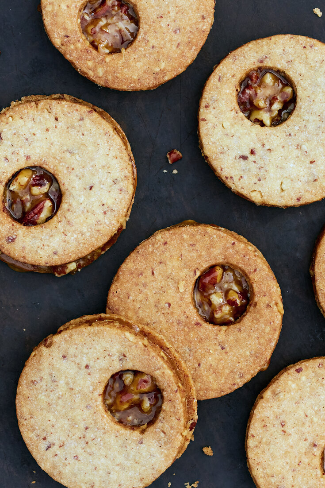

Introduction

Today I will be making the family favourite, sweet treat, Pecan Pie Sandwich Cookies. These cookies are delicious pecan cookies sandwiched over a caramel sauce. They are sweet and crumbly. I chose This Recipe because my family makes it every winter to spread Christmas spirit plus the cookies are super yummy and are one of my favourite treats.
Ingredients
For the Cookies
- 150 grams pecan halves, toasted.
- 255 grams all-purpose flour, plus more for rolling the dough.
- 225 grams unsalted butter (2 sticks), at room temperature.
- 40 grams packed confectioners’ sugar.
- 75 grams packed light brown sugar.
- 3 grams fine sea salt.
- 1 large egg yolk.
- 6 milliliters vanilla extract.
For the Filling
- 115 grams unsalted butter (1 stick).
- 220 grams packed light brown sugar.
- 80 milliliters dark corn syrup.
- 3 grams fine sea salt.
- 25 milliliters bourbon or 5 milliliters vanilla extract.
- 175 grams pecan halves, toasted and finely chopped.
Instructions

- Put 65 grams of flour and all of the pecans in a blender or a food processor and blend until coarsely ground with some larger bits remaining.
- Using a stand mixer fitted with the paddle attachment, beat the butter, both sugars and salt on low speed until creamy and smooth. Scrape the bowl and add the egg yolk and vanilla. Beat on medium-low speed until fully incorporated. Scrape the bowl and add the pecan mixture and remaining 190 grams flour. Beat on low speed until the dough comes together. Press into four ½-inch-thick squares and wrap each in plastic wrap. Refrigerate until firm, at least 3 hours and up to 2 days.
- Preheat oven to 350°F. Place 1 dough square on a generously floured surface and sprinkle with more flour. With a floured rolling pin, roll to a scant ¼-inch thickness, moving and flouring the dough as needed to prevent sticking. Using a floured 2½-inch round cutter, cut out rounds as close together as possible and transfer to a parchment-lined cookie sheet, using a thin spatula if necessary, spacing them ½ inch apart.
- Gather the scraps, roll and cut again. If desired, cut out a 1-inch circle from half of the cookies using a cookie cutter or the wide end of a pastry tip. If your dough becomes too soft to cut after rolling, pop it in the freezer until firm again.
- Bake until golden brown, about 15 minutes. Repeat with the remaining dough. Cool the cookies completely on the sheets on wire racks.
- Make the filling: Combine the butter, brown sugar, corn syrup and salt in a small saucepan and clip a candy thermometer to the side of the pot if you have one. Bring to a boil over medium-high heat, stirring occasionally to melt the butter. Continue boiling, stirring occasionally, until dark brown and thickened to the consistency of caramel sauce, 2 to 4 minutes. The candy thermometer should register 230°F. Remove from the heat and carefully add the bourbon. Stir until incorporated, then stir in the pecans until evenly coated.
- Flip over half of the cookies. Carefully scoop a tablespoon of the hot filling and scrape it onto a cookie with another spoon. Spread it in an even layer with the spoon and very gently press another cookie on top to sandwich. Flip the sandwich over so the filling can set evenly. Repeat with the remaining cookies and filling. Cool completely.